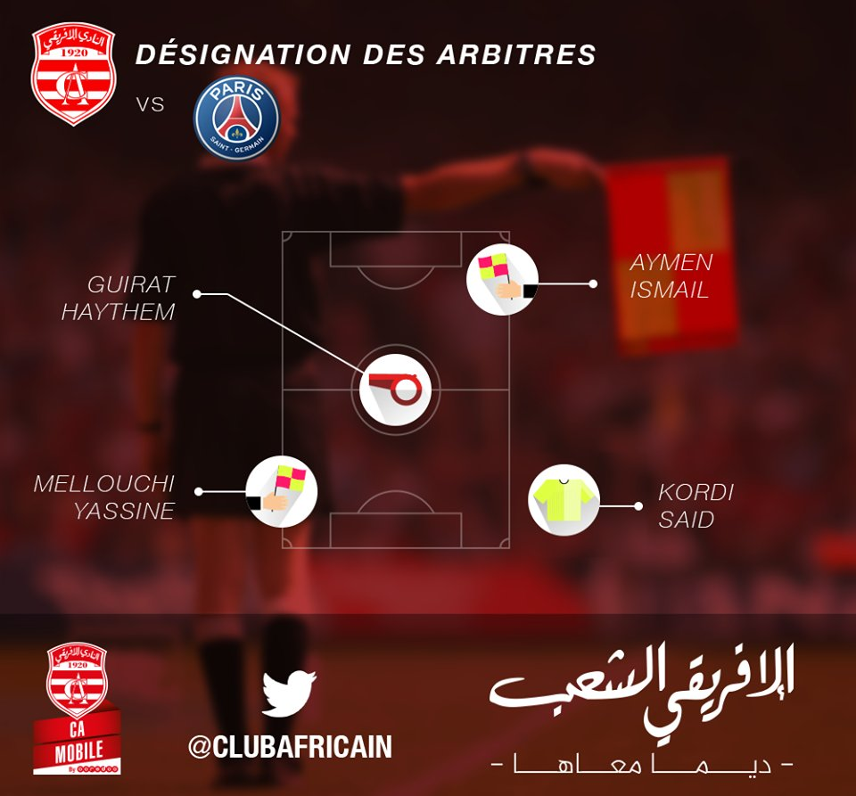

Meilleur Match
Club Africain VS Paris-Saint Germain

- Compétission : Amical
- Date : 4 janvier 2017
- Début de match : 19:00
- Premiére mi-temps : 1 - 0
- Deuxiéme mi-temps : 2 - 0
- Fin de match : 3 - 0
- Venue : Stade Olympique De Radés
- Attendance : 40 000
les Buts
- Christopher Nkunku: 19 min(assiste par Marco Verratti)
- Angel Di Maria: 90+1 min(assiste par maxwell)
- Jean-Kévin Augustin: 90+3 min(assiste par Adrien Rabiot)
| Désignation des arbitres |
Squad De Club Africain |
Squad De Paris-Saint Germain |
|  |
 |
 |
TIFO

Resumé Du Match
Acceuil